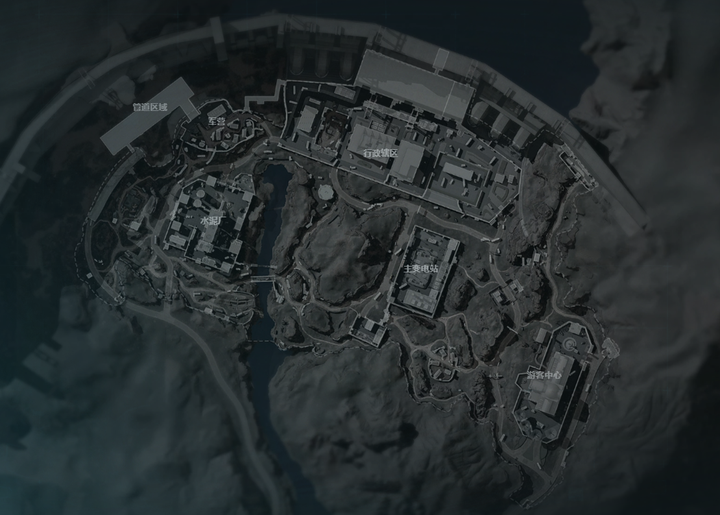

三角洲行动：零号大坝攻略
零号大坝是《三角洲行动》中一个充满机遇与挑战的地点，合理的策略能让你以低成本获得高回报。本攻略将为您提供干员选择、行动路线和关键技巧。
👤 干员与装备选择
选择合适的干员和装备是成功跑刀的基础。
威龙
移动速度快，利于快速转移和撤离，适合喜欢快速行动的玩家。在零号大坝这种需要快速移动的地图中尤其重要。
蜂医
自带治疗技能，能有效提升生存能力，尤其可以抑制如骨折等负面状态。在长时间作战中非常有用。
骇爪
扫描技能能帮助提前探测敌人，规避风险，适合团队协作。在复杂地形中能提供关键情报优势。
核心装备推荐
- 武器：G18手枪（可搭配枪管和33发弹匣）或93R手枪（使用四级弹药）
- 防具：三级头/甲（即使耐久较低，但成本效益高）
- 背包：容量较大的紫色背包（20格）并搭配13格弹挂
- 消耗品：AP6.3子弹、手术包和强效注射器
装备优先级
- 高优先级：武器、防具、医疗用品
- 中优先级：弹药、背包、战术装备
- 低优先级：装饰品、非必要配件
提示： 装备选择应根据您的游戏风格和团队需求进行调整。单排时建议优先考虑生存能力，而团队作战时可以更专注于特定角色。
🗺️ 核心路线规划
根据你的出生点，选择高效且相对安全的搜索路线至关重要。
零号大坝战略地图
零号大坝战略地图

主要路线说明
-
1游客中心附近出生：如果开局发现刷了"大保险"，可以放弃搜索游客中心，直接前往小军营，接着吃下大变电、小变电的物资，然后沿地下通道到水泥厂搜索剩余资源后撤离。
-
2变电站出生：降落后迅速前往变电站二楼搜索保险箱，再到一楼拿储物箱。之后向大坝方向的行政楼移动，搜刮完毕后再经管道区域撤离。
-
3西侧索降点：降落后直奔水泥厂主楼，获取电脑、航空箱及大武器箱。随后向北推进至行政辖区，从西门或侧门进入，清理一楼和二楼物资点。
-
4东侧索降点：从养护站或主变电站T字路口出发，优先抢占行政辖区东楼。途中可搜索停车场的航空箱和大武器箱。
提示： 路线选择应根据实际战局情况灵活调整。如果发现其他玩家已经占领目标区域，应及时改变计划，避免不必要的冲突。
💎 关键技巧与注意事项
掌握以下技巧能显著提高你的生存几率和收益。
物资搜刮优先级
高价值物资点应优先搜索，例如变电站的保险箱、行政楼的航空箱以及管道区域的物资箱。一些彩蛋点也值得留意，比如井盖可能出象牙，集装箱可能出高价值红色装备。
战斗与生存技巧
跑刀的核心是高效搜刮并安全撤离，而非战斗。尽量避免正面冲突，特别是远离热门资源争夺区。善用静步减少声响，利用掩体观察。
撤离策略
避免在前10分钟的高风险期撤离。后期可选择拉闸开启电梯撤离点或等待第二波飞机。当物资价值达到约60万时，应考虑保底撤离，避免被全装队拦截。
高级目标
如果对局开始时看到导弹轰炸坝体的动画，意味着可以直接进入坝体深处的金库，这是出高价值物品的好地方。否则通常需要完成"破壁者行动"才能进入。
高级技巧： 行政辖区的首领赛伊德会掉落M249、PKM等高阶武器，但挑战他需要较好的装备（如四级护甲和冲锋枪）和团队配合。不要贪心导致超重，这会影响移动速度和撤离点的选择。
💬 玩家论坛
在这里与其他玩家交流零号大坝的游戏心得、技巧和经验。
0
评论总数
0
总点赞数
0
参与玩家
发表评论
玩家评论
还没有评论，快来发表第一条评论吧！
论坛规则： 请文明交流，分享有价值的游戏经验。禁止发布广告、辱骂或其他不当内容。